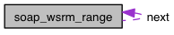

Main Page
|
Class List
|
File List
|
Class Members
|
File Members
|
Related Pages
soap_wsrm_range Struct Reference
#include <wsrmapi.h>
Collaboration diagram for soap_wsrm_range:

[
legend
]
List of all members.
Public Attributes
ULONG64
upper
ULONG64
lower
soap_wsrm_range
*
next
Member Data Documentation
ULONG64
soap_wsrm_range::lower
range
struct
soap_wsrm_range
*
soap_wsrm_range::next
next range in list
ULONG64
soap_wsrm_range::upper
The documentation for this struct was generated from the following file:
/Users/engelen/Projects/gsoap/plugin/
wsrmapi.h
Generated on Sun May 9 10:52:07 2010 for gSOAP WS-ReliableMessaging by
1.3.8
 1.3.8
1.3.8